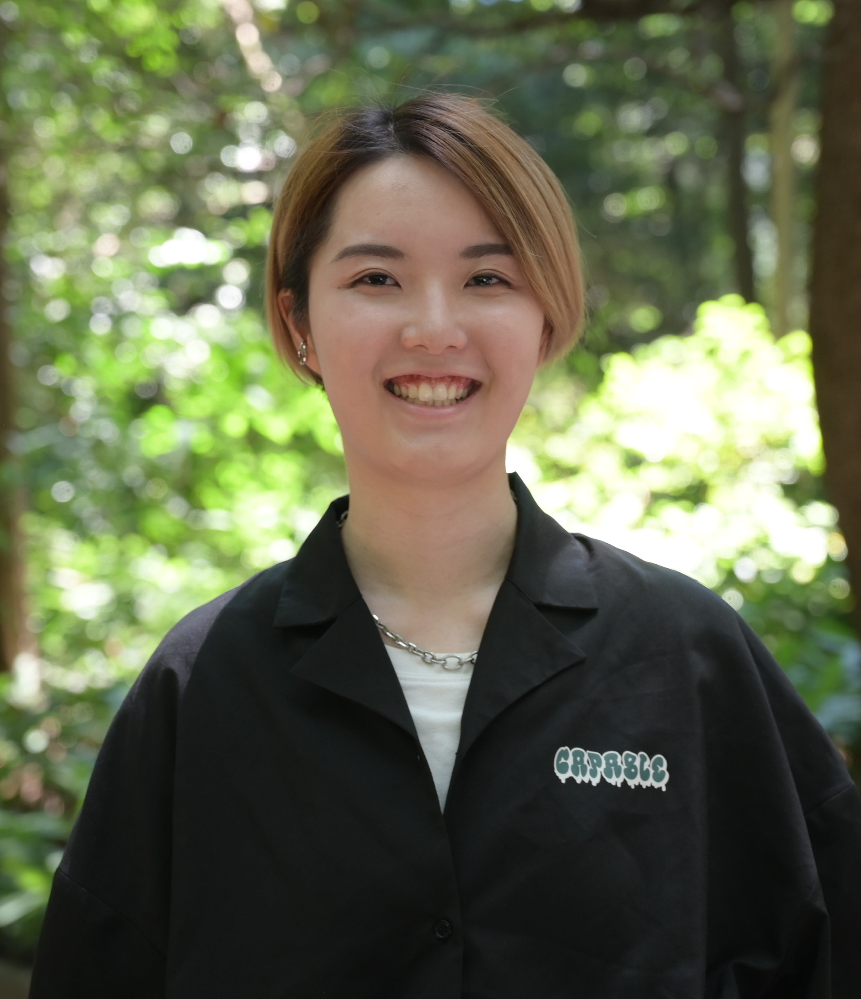

Summary of Works

岡部真希
2002年生まれ、東京都在住。出身は静岡県です。
早稲田大学創造理工学部建築学科3年。
AIと建築設計の親和性について興味があります。
2022年度秋学期を休学し、2022年11月から都内のIT企業でエンジニアとして働き始め、復学後の現在も働いています。
企業では、JSやPHPを用いてサービスのバグ改修やUI改修、新機能追加などを行っています。
【スキル】
Rhinoceros, Adobe Illustrator, HTML, CSS, JavaScript(jQuery), PHP, Zend Framework, Laravel, MySQL, Python
Rhinoceros, Adobe Illustrator, HTML, CSS, JavaScript(jQuery), PHP, Zend Framework, Laravel, MySQL, Python